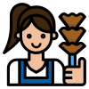

Layanan Kami
Baby Sister

Asisten Rumah Tangga
Artikel
Pentingnya Sertifikasi Tenaga Kerja
Sertifikasi menjadi bukti kompetensi dan meningkatkan kepercayaan perusahaan terhadap tenaga kerja.
Cara Memilih Perusahaan Penyalur Resmi
Pastikan perusahaan sudah terdaftar di KEMNAKER dan memiliki izin resmi.
Tren Kebutuhan Tenaga Kerja 2025
Digitalisasi mendorong permintaan tenaga kerja yang adaptif dengan teknologi.
Visi
Menjadi perusahaan penyalur tenaga kerja rumah tangga yang terpercaya, profesional, dan terdepan di Indonesia, dengan menghadirkan solusi yang aman, nyaman, dan berkualitas bagi setiap keluarga.
✔️
Misi
Menyediakan tenaga kerja rumah tangga yang terlatih, berkualitas, bertanggung jawab, serta memberikan layanan yang aman, nyaman, dan beretika.